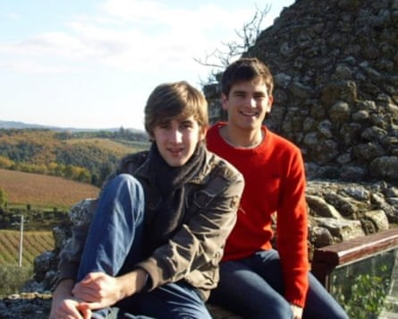
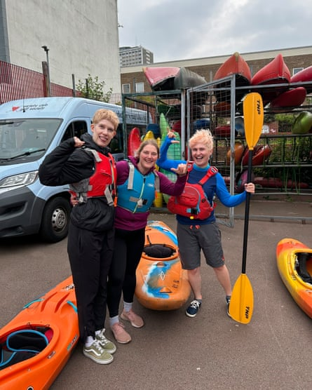
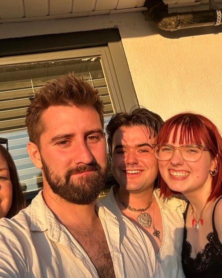

I am lucky enough to have some wonderful friends. But recently many of them have moved away because they can’t afford, or simply can’t be bothered, to live in a huge city like London any more. And when you’re in your 30s, meaningfully connecting with new people is no mean feat.
I’m not alone in feeling a little lonely: in 2023, the World Health Organization said that social isolation was becoming a “global public health concern” . From the decline of the office to the rise of single-occupancy flats, our social lives are being leached away from us. Meanwhile, streaming services and food-delivery apps discourage us from going out, their ads extolling the safety and convenience of staying home and not seeing or talking to another human. It’s almost as if they want to keep us single and friendless, with nothing to spend our money on but a disappointing chicken burger with a side of Deadpool & Wolverine .
It wasn’t always like this. Look at photos of city life in the 90s or 00s and you’ll see cafes and nightclubs and buses and trains thronging with life and conversation. People danced with each other and looked at each other and spoke to each other and touched and kissed each other – in public!
I’ve been wondering if I could bring at least some of that fun back into my own life. Here’s what happened when I stepped out of my comfort zone and tried to make some new friends.
Make an effort with strangers
If you go to a busy public place in the US – a bus, a restaurant, a bar, a sports event – it is an absolute cacophony. They talk to one another. Loudly, brashly and proudly, they talk. So I think: what better way to make social connections than to adopt Americans’ wonderful, fearless way of socialising? That means striking up conversation at any given opportunity, rather than avoiding it, as many of us in the UK are prone to do. I try it out on everyone I meet, from neighbours and shopkeepers to hospitality workers and groups of strangers in cafes and pubs.
The first person I get properly chatting to is a fellow resident of my little crescent. Let’s call him Graham. A doorman at one of London’s glossier hotels, he is as twinkly and kind as he is rough around the edges; if I were a casting director tasked with finding a quintessential London “old boy”, I would pick him immediately.
We get chatting one day, while he is smoking on his doorstep, and when I tell him I am a writer, he says: “My parents once told me, and I’ll always remember this” – he pauses, taking a long drag on his rollie – “words are to the mind what exercise is to the body.” Wise words indeed. Even just that brief chat has opened a channel and we still exchange friendly small talk every time I see him.
The rest of my interaction experiments don’t go so well. Lured into one of Gail’s bakeries by the strong wifi and flaky treats, I walk over to the baker, who is in the corner shovelling croissants in and out of ovens. He has caught my eye a couple of times, although it’s unclear whether in flirty interest or because he thinks I’m up to no good. I point upwards.
“Are you guys responsible for this playlist?” (You Oughta Know by Alanis Morissette is playing.)
“Yes.”
“Ah, great, love it!”
He smiles thinly, shovelling his croissants.
“Wow, they’re quite intricate, aren’t they?” I say, leaning over the counter a bit. “Layered.”
He smiles thinly again and nods a polite “goodbye”, which everyone knows means: “GO AWAY IMMEDIATELY, PLEASE.”
Reconnect with an ex
When I was 15, I fell in love on a riverboat in Paris. I was on holiday from Devon with my parents; Marc was on holiday from Menlo Park, California. I ran over to him as the boat was pulling in to our stop and got his phone number, which he wrote on a crumpled bit of paper.
We had a date the next day, on the steps of Sacré-Coeur, and dated long-distance for the next two years, with the help of Skype and two sets of remarkably open-minded parents. All of this sounds like a total lie. My friends at school certainly thought so, until, with great satisfaction at their dropped jaws, I introduced them all to my glossy-haired, gleaming-toothed, band-T-shirt-wearing, living, breathing American boyfriend when he came to visit one Christmas.
We’re completely different people now and there is a comfortable, affectionate lack of romance. We were children when it started and we look back on it with the same loving, nonsexual 00s nostalgia as you might T4 on the Beach or the Goosebumps books. But we still click.
He and his boyfriend are visiting London, so I ask if they want to go for a drink. Anyone who has a significant ex will know this is not as simple and casual as it sounds. It takes a bit of mental gymnastics. It takes a bit of guts. I’m not going to lie: I pick my outfit out very carefully, desperately trying to look like I’m not trying.
Dylan (left) and Marc, on a trip to Tuscany in 2007.Photograph: Courtesy of Dylan B Jones
We have fish and chips at the Hawley Arms, the pub Amy Winehouse used to frequent and pull pints in. I choose it shamelessly, knowing it’s just the right kind of touristy for cultured millennial Americans.
I realise immediately that we have both grown up. We speak eruditely about our jobs, about the world and about politics. A change from the last time we had seen each other in person, when our main gripe had been about Megavideo no longer streaming our favourite TV show at the time, Weeds.
The worst of our similarities have fallen away and the best remain. It feels a little like that epiphany you have, perhaps about 22 or 23 years old, when you realise you’re an adult. We are both grownups and it is a rewarding and powerful conversation.
I can certainly see that reconnecting with an ex might not be for everyone – God knows, there are some exes that absolutely should not be reconnected with. But if you grew apart for reasons geographical and practical, it might be worth dropping them a message. After all, there was something that drew you to them in the first place. Maybe that thing is still there, in a much more casual, unromantic, but still meaningful way.
Join a club
Book clubs aren’t for me, and neither are film clubs. I get enough (often unsolicited) opinions about what to read or watch from my friends and family and strangers on social media, thank you very much.
In the end, I plunge for the only exercise I have ever enjoyed – water sports. I grew up in Devon on the banks of the River Dart; it’s one of the most lushly wending waterways in Europe. Locals are fond of saying that if you squint when the sun’s out, it could be the Amazon.
Regent’s Canal could never be the Amazon, even if you were wearing a VR headset, but it is one of the capital’s most precious assets – paddling or strolling along it takes you past sites including a floating Chinese restaurant, world-class wall art, floating bookshops and, as you pass through the zoo, warthogs, colobus monkeys and African hunting dogs.
Dylan’s new kayaking friends … from left, Laura, Ruth and Alex.Photograph: Courtesy of Dylan B Jones
Regents Canoe Club costs £90 for a year’s membership, meeting on Monday and Thursday nights to strike out on to the canal in kayaks and canoes. Equipment is provided and, once you are a member, there is no need to book ahead – you just show up. In this economy, in one of the most expensive cities in the world, that’s pretty good.
I rock up to the induction evening wearing Ed Hardy jeans, a sparkly unicorn T-shirt and lots of jewellery and immediately feel like Cameron Diaz in heels dragging her suitcase down that snowy country lane in The Holiday . The rest of the group are mostly affable, confident, outdoorsy women sporting sturdy shoes, thick leggings and chic haircuts.
Ruth, a longtime member, shows me a video on her phone of her roiling over rapids on the Zambezi. “We didn’t worry about crocodiles,” she says breezily. “The big ones don’t come near the rapids, so it’s just the little ones.”
“This is the most fun you can have while sitting down,” says Alex, after helping Ruth give us a comprehensive but entertaining health-and-safety induction. I open my mouth to make an off‑colour joke, then remembered I’m not in my usual company of easily amused gay men.
As we clatter the kayaks out of their racks, I get a surge of serotonin, fuelled by nostalgia – the sounds and the smells evoking childhood – and a feeling of discovering the holy grail: a cheap, non-alcohol-focused, low-stress, low-effort social activity in London. Perhaps my unicorn T-shirt was appropriate after all.
Solidify acquaintances
There are always those ships in the night you met once or twice. Perhaps they are a friend of a friend, someone you encountered in passing at a party or a festival, a visiting colleague from another section of your company … you clicked, both thought: “We’re going to be the best of friends,” then never saw each other again.
It’s time to pluck up the courage to contact them. Shrug off that fear of rejection, stop overthinking that cringe thing you may or may not have said, that they may or may not have misinterpreted, and just bloody message them.
A wonderful advantage – arguably the only advantage – of social media is that this is now possible. In the 90s, you would just have never seen them again, but now, as long as you’ve got their first name and a vague notion of where they live or what they do for a job, the chances are you can track them down.
From left … Dylan, Elliot and Amber.Photograph: Courtesy of Dylan B Jones
I don’t even have to do this – I had exchanged details with Amber and Elliot in the short time we were together. It was when I was in Oxford for the weekend a few years ago. One night, thinking I didn’t go to gay bars by myself enough, I decided to check out the delightful Jolly Farmers, which describes itself as “Oxford’s oldest and oddest LGBTQ+ venue”. It certainly matched the description, with its heady melange of a few old timers almost literally propping up a slightly lopsided bar, bubbly cob walls and disco lights.
Amber and Elliot were sitting in a corner playing Guess Who? and they beckoned me over so immediately and beamingly that at first I thought we already knew each other. They were wearing matching dangly earrings in the shape of poppers bottles and were about 5,000 times cooler than anyone in a 10-mile radius. Within minutes of meeting them, I would have died for them.
Guess Who? quickly forgotten, we talked and talked about their experiences as queer Oxford students, pop music, my life in London and more. The next thing I knew, I was at a halls party drinking something aniseedy from a cracked plastic cup. We said our goodbyes under some strobe-lit brick arches at about 4am and stayed in touch, laugh-reacting to the odd shared meme.
Now, about three years after we met, I see that Amber has moved to London. I message her asking if she would like to get together for a drink. Elliot is in town, too, and we all meet at an insultingly chic pub in Stoke Newington and reminisce about our mad night in Oxford. We also, just like everyone else in the crowded beer garden, lament our jobs and lambast life. Next, it’s time for a flat party, where I bring my boyfriend and we play what I’m fairly sure was Murder in the Dark (but can’t quite remember).
It teaches me that you don’t necessarily need complicated tactics or new hobbies or psychological instruction to improve your social life. Sometimes, like Italian food, it’s best to keep it simple: quality ingredients and quick, easy techniques are all you need to craft that most elusive of dishes – a beautiful new friendship.